소음진동기사(구) (2004-05-23 기출문제)
1과목: 소음진동개론
1. Sound Power Level에 관한 다음 기술 중 맞지 않는 것은?
- 음원의 출력을 dB로써 나타낸것이다
- 하나의 음원에는 하나밖에 없다
- 출력이 10배가 되면 20dB 크게 된다
- Power Level을 계산하기 위한 기준음향파워는 10-12W이다
(정답률: 알수없음)

2. 섭씨 45도의 사막지방에서의 음속은?
- 약 320 m/s
- 약 340 m/s
- 약 360 m/s
- 약 380 m/s
(정답률: 알수없음)
3. 그림과 같은 음압진폭이 20Pa(파스칼)인 정현음파의 파형이 있다. 이 음파의 음압레벨은 약 몇 dB이 되는가?
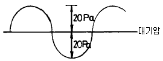
- 117 dB
- 120 dB
- 123 dB
- 126 dB
(정답률: 알수없음)
4. 음압 실효치가 5×10-1[N/m2]인 평면파의 음의 세기는 몇 [W/m2]인가? (단, 고유음향 임피던스는 400[Rayls]라 한다)
- 1.25×10-3[W/m2]
- 3.13×10-4[W/m2]
- 4.76×10-4[W/m2]
- 6.25×10-4[W/m2]
(정답률: 알수없음)
5. 인간이 느낄수 있는 진동 가속도의 범위로 가장 알맞는 것은?
- 0.01 Gal∼10 Gal
- 0.1 Gal∼100 Gal
- 1 Gal∼100 Gal
- 1 Gal∼1000 Gal
(정답률: 알수없음)
6. 음의 굴절에 관한 설명으로 틀린 것은?
- 대기의 온도 차에 의한 굴절인 경우, 온도가 높은 쪽으로 굴절한다
- 대기의 온도 차에 의한 굴절인 경우, 낮에 거리감쇠가 커진다(지표부근온도가 상공보다 고온임)
- 음원보다 상공의 풍속이클 때 풍상측에서는 상공으로 굴절한다
- 음원보다 상공의 풍속이클 때 풍하측에서는 지면쪽으로 굴절한다
(정답률: 알수없음)
7. 소음의 평가를 600∼1200, 1200∼2400, 2400∼4800(Hz)의3개의 밴드로 분석한 음압레벨의 산술평균한 값은?
- NC
- PNC
- 회화 방해레벨
- 우선회화 방해레벨
(정답률: 알수없음)
8. 어떤 소음을 A특성과 C특성 청감보정에 의해서 각각 측정한 결과 C특성 측정치가 A특성 측정치 보다 10dB 이상 높게 나타났다. 이 결과에 대한 평가로서 옳은 것은?
- 이 소음은 저주파 성분이 주성분이다.
- 이 소음은 고주파 성분이 주성분이다.
- 이 소음은 전주파수대에 골고루 분포되어 있다.
- C특성 측정치가 높다는 사실은 이 소음이 특히 인체에 해롭다는 것을 의미한다.
(정답률: 알수없음)
9. 다음은 음의 기준에 관한 것이다. 잘못 짝지어진 것은?
- 1000Hz 순음 40phon을 1sone으로 정의한다
- 청감보정 A특성-40[phon]등감곡선
- 청감보정 B특성-60[phon]등감곡선
- 청감보정 C특성-85[phon]등감곡선
(정답률: 알수없음)
10. 사람의 귀의 기능상의 구분 중 중이에 관한 설명으로 틀린 것은?
- 음의 전달매질은 고체이다
- 와우각에 의하여 진동을 내이로 전달한다
- 고실의 넓이는 1-2cm2 로 이소골이 있다
- 진동음압을 20배 정도 증폭하는 임피던스 변환기의 역활을 한다
(정답률: 알수없음)
11. 100sones 인 음은 몇 phons인가?
- 73.2
- 86.2
- 97.4
- 106.5
(정답률: 알수없음)
12. 하나의 파면상의 모든 점이 파원이 되어 각각 2차적인 구면파를 사출하여 그 파면들을 둘러싸는 면이 새로운 파면을 만드는 현상과 가장 관계 있는 것은?
- Masking 원리
- Huyghens 원리
- Doppler 원리
- Snell 원리
(정답률: 알수없음)
13. 레이노씨 현상(Raynand's phenomenon)과 관계가 없는 것은?
- White finger
- 더위에 폭로되면 이러한 현상은 더욱 악화
- 압축공기를 사용하는 망치, 착암기
- 혈액순환의 장해
(정답률: 알수없음)
14. 0℃의 공기중에서 파장이 2.5m인 음의 주파수는?
- 약 132 Hz
- 약 143 Hz
- 약 1,533 Hz
- 약 1,633 Hz
(정답률: 알수없음)
15. 기상조건에 의한 일반적인 흡음감쇠 효과를 가장 알맞게 설명한 것은?
- 주파수가 작을수록, 기온이 높을수록, 습도가 높을 수록 감쇠 효과가 커진다.
- 주파수가 작을수록, 기온이 낮을수록, 습도가 낮을 수록 감쇠 효과가 커진다.
- 주파수가 커질수록, 기온이 높을수록, 습도가 높을 수록 감쇠 효과가 커진다.
- 주파수가 커질수록, 기온이 낮을수록, 습도가 낮을 수록 감쇠 효과가 커진다.
(정답률: 알수없음)
16. 공중에 있는 점음원의 지향지수(dB)는?
- 0
- 1
- 2
- 3
(정답률: 알수없음)
17. 음향출력이 30W인 점음원이 있다. 이 점음원으로 부터 구면파가 전파될 때 이 음원으로 부터 50m 떨어진 지점의 음의 세기는? (단, 무지향성 , 자유공간인 경우)
- 약 87dB
- 약 90dB
- 약 93dB
- 약 96dB
(정답률: 알수없음)
18. 단진자의 길이가 0.5m일 때 그 주기(초)는?
- 1.24
- 1.42
- 1.69
- 1.94
(정답률: 알수없음)
19. 1/1옥타브 밴드 분석기의 중심 주파수가 500㎐인 경우의 차단 주파수로 가장 알맞는 범위는?
- 250㎐ ~ 1000㎐
- 270㎐ ~ 750㎐
- 375㎐ ~ 750㎐
- 355㎐ ~ 710㎐
(정답률: 알수없음)
20. 15℃에서 400[㎐]의 공명기음을 갖는 양단 개구관이 있다. 35℃에서는 대략 몇 [㎐]의 공명기음을 갖겠는가?
- 402
- 414
- 427
- 438
(정답률: 알수없음)
2과목: 소음방지기술
21. 다음은 방음벽의 설계에 관한 내용들이다. 틀린 것은?
- 방음벽 설계는 무지향성 음원으로 가정한 것이므로 음원의 지향성과 크기에 대한 상세한 조사가 필요하다.
- 수음원측 방향으로 음원의 지향성이 클때는 벽에 의한 감쇠치가 계산치보다 크게 된다.
- 벽의 투과 손실은 회절감쇠치보다 적어도 5dB이상 크게하는 것이 바람직하다.
- 벽의 길이는 점음원일때 벽높이의 2배이상, 선음원 일때는 음원과 수음원간의 거리를 5배 이상하는 것이 바람직하다.
(정답률: 알수없음)
22. 흡음닥트형 소음기(消音器)의 통과 유속은 얼마로 하는 것이 바람직 한가?
- 20m/sec 이하
- 20-40m/sec
- 40-60m/sec
- 60m/sec 이상
(정답률: 알수없음)
23. 단일벽의 면밀도가 50kg/m2 이고 벽면에 수직입사하는 입사음의 주파수가 500Hz 일 때 이 벽체의 투과손실값은?
- 35 dB
- 40 dB
- 45 dB
- 50 dB
(정답률: 알수없음)
24. (다공질형 흡음재를 시공할 때 벽면에 바로 부착하는 것보다 ( )로(가) 되는 1/4 파장의 홀수배 간격의 배후공기층을 두고 설치하면 저음역의 흡음율도 개선 된다.) ( )안에 알맞는 내용은?
- 입자속도가 최대
- 입자속도가 최소
- 에너지밀도가 최대
- 에너지밀도가 최소
(정답률: 알수없음)
25. 입사음의 80％를 흡음하고, 10％는 반사 그리고 10％를 투과시키는 음향 재료를 이용하여 방음벽을 만들었다. 이 방음벽의 투과손실은 얼마인가?
- 20dB
- 10dB
- 8dB
- 5dB
(정답률: 알수없음)
26. 공장내에 A실과 B실이 있다. A실의 실용적 240m3, 표면적 256m2, B실이 실용적 1920m3, 표면적 1024m2이고 A실과 B실의 내벽은 공히 동일 재료로 되어 있다. A실의 잔향시간이 1초 였다면 B실의 잔향시간은 몇 초가 되겠는가?
- 2
- 3
- 4
- 5
(정답률: 알수없음)
27. 투과손실이 40 dB인 벽의 면적의 40%를 투과손실이 20dB인 유리창으로 변경한 경우 이 복합벽의 투과손실은?
- 20 dB
- 24 dB
- 28 dB
- 32 dB
(정답률: 알수없음)
28. 밀도가 150kg/m3이고 두께가 5mm인 합판을 벽체로부터 50mm의 공기층을 두고 설치할 경우 판 진동에 의한 흡음주파수는? (단, 공기밀도는 1.2kg/m3 , 기온은 20℃이다.)
- 309Hz
- 336Hz
- 374Hz
- 394Hz
(정답률: 알수없음)
29. 공장의 신설 및 증설시 소음방지계획에 필히 참고를 하여야 할 사항과 가장 거리가 먼 것은?
- 지역구분에 따른 부지경계선에서의 소음레벨이 규제 기준 이하가 되도록 설계한다.
- 특정 공장인 경우는 방지계획 및 설계도를 첨부한다.
- 공장건축물, 구조물에 의한 방음설계, 기계자체 및 조합에 의한 방음설계의 계획을 세운다.
- 공장내에서 기계의 배치를 바꾸든가, 소음레벨이 큰 기계를 부지경계선에서 먼 곳으로 이전 설치한다.
(정답률: 알수없음)
30. 중공이중벽의 공기층 두께가 20cm이고 두벽의 면밀도가 각각 200kg/m2, 300kg/m2 이라 할 때 저음역에서의 공명 주파수는 약 몇 Hz정도에서 발생되겠는가?
- 12
- 24
- 36
- 48
(정답률: 알수없음)
31. 그림과 같은 방음벽에서 A=20m, B=35m, d=50m일 때 500Hz에서의 프레넬수( Fresnel number )는? (단, C=340m/s, 방음벽길이는 충분히 길다고 가정)
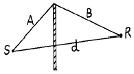
- 14.7
- 13.2
- 12.4
- 11.6
(정답률: 알수없음)
32. 가로30m, 세로40m, 천정높이 3m의 바닥중앙에 PWL 90dB인 기계를 설치하려고 한다. 기계(무지향성)중심에서 8m떨어진 곳의 음압레벨은? (단, 이 실내(공장안)의 평균흡음율은 0.4이다.)
- 58.2dB
- 66.6dB
- 78.2dB
- 81.4dB
(정답률: 알수없음)
33. 난입사 흡음율 측정법으로 알맞는 것은?
- 관내법
- 잔향실법
- 정재파법
- 관외법
(정답률: 알수없음)
34. 벽체의 한쪽면은 실내, 다른 한쪽면은 실외에 접한 경우 벽체의 투과손실 TL과 벽체를 중심으로한 실내외간 음압레벨차 △L(차음도)와의 실용적인 관계식으로 적당한 것은?
- TL=△L-3 dB
- TL=△L-6 dB
- TL=△L-9 dB
- TL=△L-12 dB
(정답률: 알수없음)
35. 정격유속 조건하에서 소음원에 소음기를 부착하기 전과 후의 공간상의 어떤 특정위치에서 측정한 음압레벨의 차와 그 측정위치로 정의되는 것은?
- 감쇠치
- 감음량
- 투과손실치
- 동적 삽입손실치
(정답률: 알수없음)
36. 공명흡입의 경우, 구멍직경 8mm, 개공율은 0.1256, 두께 10mm인 다공판을 50mm의 공기층을 두고 설치할 경우 공명주파수는? (단, 음속은 340m/s이다.)
- 470Hz
- 570Hz
- 670Hz
- 770Hz
(정답률: 알수없음)
37. 평균출력이 100Hp인 전동기가 1200rpm으로 가동될 때 음향 파워레벨은 얼마인가? (단, 전동기의 변환계수(Fn)는 1× 10-7, 1Hp=746W 이다.)
- 99dB
- 104dB
- 106dB
- 112dB
(정답률: 알수없음)
38. 가로, 세로, 높이가 3m, 5m, 2m인 방의 바닥, 벽, 천장의 흡음률이 각각 0.1, 0.2, 0.6일 때 방의 평균흡음률은?
- 0.17
- 0.27
- 0.37
- 0.47
(정답률: 알수없음)
39. 단순 팽창형 소음기의 단면적비가 5 이고 sin2KL = 1.0일 때 투과손실은?
- 약 8 dB
- 약 14 dB
- 약 17 dB
- 약 23 dB
(정답률: 알수없음)
40. 균질의 단일벽 두께를 4배로 할 경우 일치효과의 한계주파수는 몇배로 되겠는가? (단, 기타 조건은 일정함)
- 1/4배
- 1/2배
- 2배
- 4배
(정답률: 알수없음)
3과목: 소음진동 공정시험 기준
41. 철도소음의 연속 측정시간(1회 기준)은?
- 10분
- 1시간
- 2시간
- 4시간
(정답률: 알수없음)
42. 10차선도로에서 도로변 지역의 범위는 도로단으로부터 몇 m 이내의 지역을 의미하는가? (단, 고속도로, 자동차 전용도로 제외)
- 10m
- 50m
- 100m
- 200m
(정답률: 알수없음)
43. 소음계의 기본구조의 구성순서로 알맞는 것은?
- 마이크로폰 - 증폭기 - 레벨렌지변환기 - 청감보정회로
- 마이크로폰 - 증폭기 - 청감보정회로 - 레벨렌지변환기
- 마이크로폰 - 레벨렌지변환기 - 증폭기 - 청감보정회로
- 마이크로폰 - 청감보정회로 - 레벨렌지변환기 - 증폭기
(정답률: 알수없음)
44. 배경소음보다 10 ㏈ 이상 큰 항공기 소음의 평균지속시간이 64초일 때 보정치(WECPNL)는?
- 1
- 3
- 5
- 7
(정답률: 알수없음)
45. 측정진동 레벨이 배경진동보다 몇 dB(V) 이상이면 보정 없이 사용하는가?
- 5
- 7
- 9
- 10
(정답률: 알수없음)
46. 표준음 발생기에 관한 설명 중 알맞지 않은 것은?
- 소음계의 측정감도를 교정하는 기기이다.
- 발생음의 주파수와 음압도가 표시된다.
- 발생음 오차는 ± 1dB 이내이어야 한다.
- 발생음을 기록기등에 전송할 수 있는 출력단자를 갖춘 것이어야 한다.
(정답률: 알수없음)
47. 공정시험방법상 "정상소음"의 정의로 알맞는 것은?
- 암소음 이외에 측정하고자 하는 특정의 소음을 말한다.
- 시간적으로 변동하지 아니하거나 또는 변동폭이 작은 소음을 말한다.
- 장애물등 소음에 영향을 미치는 요소없이 발생되는 소음을 말한다.
- 충격소음, 연속소음외에 소음원으로 부터 발생되는 소음을 말한다.
(정답률: 알수없음)
48. 7일간의 항공기소음의 일별 WECPNL이 80, 81, 85, 83, 78, 68, 62인 경우 7일간의 평균 WECPNL은?
- 78
- 81
- 84
- 87
(정답률: 알수없음)
49. 항공기소음측정에 대한 설명으로 알맞지 않은 것은?
- 측정지점 반경 3.5m이내는 가급적 평활하고, 흡음이 잘 되는 장소이어야 한다.
- 측정위치를 정점으로 한 원추형 상부공간내에는 측정치에 영향을 줄 수 있는 장애물이 없어야 한다.
- 소음계의 마이크로폰은 소음원방향으로 하여야 한다.
- 상시 측정용 측정점은 주변환경을 고려하여 지면으로부터 1.2∼5m 높이로 할 수 있다.
(정답률: 알수없음)
50. 다음( )안에 들어갈 말로 옳은 것은?
- 평균치
- 피 - 크치
- 실효치
- 순시치
(정답률: 알수없음)
51. 진동측정기의 사용기준으로 틀린 것은?
- 측정가능 진동레벨의 범위는 45-120dB이상이어야한다.
- 진동픽업의 횡감도는 규정주파수에서 수감축 감도에 대한 차이가 15dB이상이어야 한다(연직특성)
- 지시계기의 눈금오차는 1.0dB이내이어야 한다.
- 레벨렌지 변환기가 있는 기기에 있어서 레벨렌지 변환기의 전환오차가 0.5dB이내이어야 한다.
(정답률: 알수없음)
52. 진동의 배출값을 디지탈 진동자동분석계로 측정하고자 한다. 그 지점에서의 측정진동레벨로 사용하는 값은?
- 자동연산, 기록한 90% 범위의 상단치인 L90
- 자동연산, 기록한 90% 범위의 상단치인 L10
- 자동연산, 기록한 80% 범위의 상단치인 L80
- 자동연산, 기록한 80% 범위의 상단치인 L10
(정답률: 알수없음)
53. 소음계 성능상 교정장치는 몇 dB(A)이상이 되는 환경에서 도 교정이 가능하여야 하는가?
- 60
- 70
- 80
- 90
(정답률: 알수없음)
54. 항공기 소음의 WECPNL 산출시 비행기횟수 N2는 몇 시부터 몇 시까지의 비행횟수를 나타내는가?
- 07시 ~ 19시
- 08시 ~ 20시
- 09시 ~ 21시
- 10시 ~ 22시
(정답률: 알수없음)
55. 소음계의 구조별 성능에 관한 설명으로 알맞지 않는 것은?
- 마이크로폰:지향성이 작은 압력형으로 한다.
- 증폭기:음향에너지를 전기에너지로 변환 증폭시킨다.
- 동특성조절기:지시계기의 반응속도를 빠름 및 느림의 특성으로 조절할 수 있는 조절기를 가져야 한다.
- 출력단자:소음신호를 기록기 등에 전송할 수 있는 교류단자를 갖춘 것이어야 한다.
(정답률: 알수없음)
56. 소음계의 지시판 위쪽을 벗어난 소음도 구간에 대해서 구한 백분율이 10%를 초과할 때 구해진 등가소음도에 얼마를 더해 주어야 하는가? (단, 소음계로만 측정할 경우)
- 2 dB
- 3 dB
- 4 dB
- 5 dB
(정답률: 알수없음)
57. 배출허용기준 소음 측정시 적절한 측정시각에 몇 개 이상의 측정 지점수를 설정 측정하여야 하는가? (단, 측정지점수 설정 기준)
- 8개
- 6개
- 4개
- 3개
(정답률: 알수없음)
58. 배출허용소음기준 측정시 자료분석 방법에 관한 사항 중 알맞지 않은 것은? (단, 소음계만으로 측정할 경우)
- 측정자료는 소숫점 첫째자리에서 반올림한다.
- 목측으로 5초간격 50회 판독, 기록한다.
- 소음계의 지시치의 변화폭이 5dB(A)이내일 때에는 구간내 지시치를 산술 평균한다.
- 소음계의 지시치에 변동이 없을 때에는 그 지시치로 한다.
(정답률: 알수없음)
59. 소음계의 성능 중 측정가능 주파수 범위기준으로 가장 알맞는 것은?
- 31.5㎐ ∼ 4㎑이상
- 63㎐ ∼ 4㎑이상
- 31.5㎐ ∼ 8㎑이상
- 63㎐ ∼ 8㎑이상
(정답률: 알수없음)
60. 발파진동 측정지점수는 주간시간대 및 심야시간대의 각 시간대 중에서 최대발파진동이 예상되는 시각에 몇 지점 이상을 택하여야 하는가? (단, 소음진동 공정시험 방법상의 기준 적용)
- 5지점
- 3지점
- 2지점
- 1지점
(정답률: 알수없음)
4과목: 진동방지기술
61. 특성 임피던스가 39×106㎏/m2sec인 금속관의 프렌지 접속부에 특성 임피던스가 3×104㎏/m2sec의 고무를 넣어 제진(진동절연)할때의 진동감쇠량(dB)은?
- 약 10
- 약 15
- 약 20
- 약 25
(정답률: 알수없음)
62. 진동에 있어서 전파경로대책에 대한 설명으로 틀린 것은?
- 거리에 따른 감쇠로 진동파의 종류나 지반상태에 따라 다르다.
- 내부감쇠란 주파수가 높을수록, 전파속도가 클수록 크다.
- 에너지 분산에 의한 감쇠는 표면파의 경우 3dB 감소 한다.(거리 2배 기준)
- 지표면으로 전달되는 진동의 전파를 감소하기 위해서는 도랑이나 차단층을 설치한다.
(정답률: 알수없음)
63. 금속스프링은 감쇠가 거의 없고, 고주파 진동시 단락되기 쉽고, 로킹(rocking)현상이 일어나는 단점이 있다. 이를 보완하기 위한 설명 중 틀린 것은?
- 스프링의 정적 수축량이 일정한 것을 쓴다.
- 기계무게의 1∼2배 무게의 가대를 부착시킨다.
- 스프링의 감쇠비가 클 경우에는 스프링과 병렬로 damper를 넣고 사용한다.
- 계의 중심을 낮게 하고 부하(하중)가 평형분포 되도록 한다.
(정답률: 알수없음)
64. 진동발생이 크지 않은 공장기계의 대표적인 지반진동 차단구조물은 개방식 방진구이다. 이러한 방진구의 가장 중요한 설계 인자는?
- 트렌치 깊이
- 트렌치 폭
- 트렌치 형상
- 트렌치 위치
(정답률: 알수없음)
65. 아래의 방진 재료중 일반적으로 가장 낮은 고유 진동수에 사용 가능한 것은?
- 고무패드
- 금속스프링
- 탄성블럭
- 공기스프링
(정답률: 알수없음)
66. 4ton 선반의 네 귀퉁이를 코일스프링으로 방진하였더니 정적처짐이 2cm 발생하였다면 이 코일 스프링의 스프링 정수 K는?
- 400 kg/cm
- 500 kg/cm
- 1,000 kg/cm
- 2,000 kg/cm
(정답률: 알수없음)
67. 질량이 m이고 길이가 ℓ 인 그림과 같은 막대진자의 고유진동수는? (단, 수직으로 매달린 가늘고 긴 막대가 평면에서 진동하며 진폭은 작다고 가정한다)
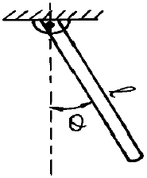
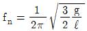
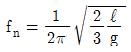
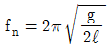
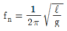
(정답률: 알수없음)
68. 방진대책으로 발생원, 전파경로, 수진측 대책을 들수 있는데 발생원 대책으로 적당하지 않은 것은?
- 불평형력의 바란싱
- 기초중량의 부가 및 경감
- 동적흡진
- 방진구
(정답률: 알수없음)
69. 크랭크 축의 진동중 가장 심하게 일어날 수 있는 진동은?
- 비틀림진동
- 굽힘진동
- 압축방향의 수직진동
- 인장방향의 수직진동
(정답률: 알수없음)
70. 전달력이 항상 외력보다 작아 차진이 유효한 범위인 경우는? (단, f : 강재진동수, fn : 고유진동수)
- f/fn=1
- f/fn＜√ 2
- f/fn＞√2
- f/fn=√2
(정답률: 알수없음)
71. 질량이 2ton인 기계가 속도 2m/sec로 운전될 때 진동을 모두 흡수시키고자 가진점에 스프링을 설치하였다. 최대 충격력이 80,000N이면 스프링의 최대변형량은 몇 cm인가?
- 5cm
- 10cm
- 15cm
- 20cm
(정답률: 알수없음)
72. 스프링상수가 4.8N/cm인 4개의 동일한 스프링들이 어떤기계를 받치고 있다. 만일 이들 스프링의 길이가 1cm 줄었다면, 이 기계의 무게는?
- 1.2N
- 5.6N
- 11.5N
- 19.2N
(정답률: 알수없음)
73. 진동차단 구조물의 전달에너지 감소현상과 가장 거리가 먼 것은?
- 진동파의 간섭
- 진동파의 산란
- 진동파의 발산
- 진동파의 반사
(정답률: 알수없음)
74. 어떤 기계가 스프링 위에 지지되어 있으며 회전운동에 따른 진동을 발생하고 있다. 3000rpm에서 회전불균형에 의한 강제외력이 500N 이였다면, 이 기계가동에 따른 진동전달력(N)은? (단, 계의 고유진동수는 11.3Hz, 감쇠계수는 0.2 )
- 26.9
- 21.2
- 19.2
- 16.2
(정답률: 알수없음)
75. 전달율(Transmissibility)을 0.1로 하기 위해서는 W/Wn의 값을 얼마로 해야 하는가? (단, 비감쇠 강제진동기준 )
- 3.32
- 4.64
- 5.97
- 6.48
(정답률: 알수없음)
76. 어떤 질점의 운동변위가 x=5sin(2π t-π/3)cm 로 표시될 때 진동의 주기는 얼마인가?
- 0.5sec
- 1sec
- 2sec
- 4sec
(정답률: 알수없음)
77. 어떤 진동 x(t) = 3 cos 60t + sin 60t 의 최대 진폭은?
- 2
- 4
- √10
- √60
(정답률: 알수없음)
78. 그림과 같은 진동계에 대하여 고유진동수를 구하면 얼마인가?
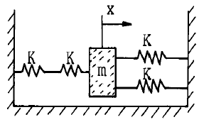
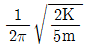
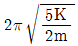
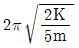
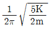
(정답률: 알수없음)
79. 기계를 기초에 고정하고 운전하였더니 기계의 상면의 높이가 998mm부터 1002mm 사이를 매분 240회 진동하였다. 이 진동의 진동가속도 레벨은? (단, 기준 가속도로서 10-5m/s2을 가정함)
- 89 dB
- 99 dB
- 109 dB
- 119 dB
(정답률: 알수없음)
80. 지표면을 따라서 전해지는 파동에 관한 설명으로 알맞지 않은 것은?
- Rayleigh파:거리감쇠는 거리가 2배로 되면 3dB 감소한다.
- 횡파:거리감쇠는 거리가 2배로 되면 6dB 감소한다.
- 종파:거리감쇠는 거리가 2배로 되면 6dB 감소한다.
- 표면파:표면에 전달되는 종파와 횡파를 총칭하는 파로 전파속도가 비교적 빠르다.
(정답률: 알수없음)
5과목: 소음진동 관계 법규
81. 제작차 소음허용기준에 적합하지 아니하게 자동차를 제작한 자에 대한 벌칙기준으로 적절한 것은?
- 1년 이하의 징역 또는 500만원 이하의 벌금
- 3년 이하의 징역 또는 1500만원 이하의 벌금
- 5년 이하의 징역 또는 3000만원 이하의 벌금
- 7년 이하의 징역 또는 5000만원 이하의 벌금
(정답률: 알수없음)
82. 운행자동차중 경자동차의 배기소음허용기준으로 적절한 것은? (단, 2000년 1월1일 이후에 제작되는 자동차)
- 100dB(A)이하
- 1⑤dB(A)이하
- 110dB(A)이하
- 115dB(A)이하
(정답률: 알수없음)
83. 공장소음의 배출허용기준을 바르게 기술한 것은?
- 대상소음도에서 보정한 평가소음도가 50dB(A) 이하일 것
- 대상소음도에서 보정한 평가소음도가 55dB(A) 이하일 것
- 대상소음도에서 보정한 평가소음도가 60dB(A) 이하일 것
- 대상소음도에서 보정한 평가소음도가 65dB(A) 이하일 것
(정답률: 알수없음)
84. ( ① )은(는) 소비자에게 저소음 제품을 선택,구매할 수 있는 정보를 제공하기 위하여 필요하다고 인정하는 경우고소음을 발생하는 기계,기구 기타 제품을 제조 또는 수입하는 자에 대하여 당해 기계등에 소음의 정도를 표시하는 표지를 부착하여 판매할 것을 ( ② )할 수 있다. ( )에 알맞는 내용은?
- ① 시·도지사, ② 권고
- ① 시·도지사, ② 명령
- ① 환경부장관, ② 권고
- ① 환경부장관, ② 명령
(정답률: 알수없음)
85. 소음∙진동관계법규상의 교통기관에 속하지 않는 것은?
- 자동차
- 기차와 전차
- 도로와 철도
- 항공기와 선박
(정답률: 알수없음)
86. 소음∙진동규제법상 소음의 정의로 알맞는 것은?
- 기계∙ 기구등에서 배출되는 강한 소리를 말한다.
- 80 dB 이상의 소리로 인간에게 불쾌감을 주는 모든 소리를 말한다.
- 기계∙기구∙시설 기타 물체의 사용으로 인하여 발생하는 강한 소리를 말한다.
- 기계∙기구∙시설 기타 물체에서 발생하여 인간에게 불쾌감을 주는 소리를 말한다.
(정답률: 알수없음)
87. 운행차 소음허용기준에서 자동차의 소음종류별로 소음배출특성을 참작하여 정하는데 참작되는 소음의 종류는?
- 경적소음, 가속소음
- 배기소음, 경적소음
- 배기소음, 주행소음
- 가속소음, 주행소음
(정답률: 알수없음)
88. 자동차 제작차의 권리·의무의 승계를 신고하고자 하는자는 그 사유발생일로부터 며칠 이내에 관련서류를 환경 부장관에게 제출하여야 하는가?
- 10일
- 15일
- 30일
- 45일
(정답률: 알수없음)
89. 생활소음 규제기준에서 언급된 실외에 설치한 확성기 사용에 관한 기준으로 적절한 것은?
- 1회 1분 이내, 15분 이상의 간격을 두어야 한다.
- 1회 2분 이내, 15분 이상의 간격을 두어야 한다.
- 1회 3분 이내, 30분 이상의 간격을 두어야 한다.
- 1회 5분 이내, 30분 이상의 간격을 두어야 한다.
(정답률: 알수없음)
90. 공항주변 인근지역의 항공기 소음의 한도로 알맞은 것은? (단, 항공기 소음영향도(WECPNL)기준)
- 80
- 90
- 100
- 110
(정답률: 알수없음)
91. 다음 조건에서 소음에 대한 환경기준으로 적절한 것은?
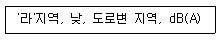
- 60
- 65
- 70
- 75
(정답률: 알수없음)
92. 다음 조건에서의 생활소음 규제기준으로 적절한 것은?
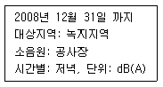
- 55 이하
- 60 이하
- 65 이하
- 70 이하
(정답률: 알수없음)
93. 운행차의 개선명령기간으로 적절한 것은?
- 개선명령일로 부터 3일
- 개선명령일로 부터 5일
- 개선명령일로 부터 7일
- 개선명령일로 부터 10일
(정답률: 알수없음)
94. 특정공사의 사전신고대상 기계,장비의 종류로 틀린 것은?
- 로우더
- 압입식 항타항발기
- 콘크리트 펌프
- 콘크리트 절단기
(정답률: 알수없음)
95. 환경부장관의 제작차 소음허용기준 인증을 면제할 수 있는 자동차와 가장 거리가 먼 것은?
- 군용·소방용 및 경호업무용등 국가의 특수한 공용의 목적으로 사용하기 위한 자동차
- 여행자 등이 다시 반출할 것을 조건으로 일시 반입하는 자동차
- 외국에서 6월이상 거주한 자가 주거를 이전하기 위해 이주물품으로 반입하는 자동차
- 주한 외국군대의 구성원이 공용의 목적으로 사용하기 위하여 반입하는 자동차
(정답률: 알수없음)
96. 제작차 소음허용기준과 관련한 자동차 인증의 변경시 인증변경신청서에 첨부해야 할 서류가 아닌 것은?
- 동일차종임을 입증할 수 있는 서류
- 자동차의 소음저감에 관한 서류
- 변경된 인증내용에 대한 설명서
- 자동차제원명세서
(정답률: 알수없음)
97. 다음 조건에서 생활진동 규제기준은?
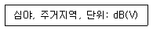
- 60 이하
- 55 이하
- 50 이하
- 45 이하
(정답률: 알수없음)
98. 이동 소음원의 종류에 관한 설명으로 적절치 않은 것은?
- 이동하며 사용하는 확성기
- 행락객이 사용하는 음향기계 및 기구
- 소음방지장치가 비정상적인 이륜자동차
- 음향장치를 부착하고 운행하는 이륜자동차
(정답률: 알수없음)
99. 다음 중 소음·진동 규제법상 방음시설에 해당하지 않는 것은?
- 소음기
- 방음림 및 방음언덕
- 방음덮개 및 내피시설
- 방음창 및 방음실시설
(정답률: 알수없음)
100. 환경관리인 자격기준중 소음.진동기사 2급을 대체할 수 없는 자격종류는? (단, 2급은 산업기사와 같음, 환경분야에서 2년이상 종사한 자 기준)
- 기계분야기사 2급
- 금속분야기사 2급
- 수질환경기사 2급
- 대기환경기사 2급
(정답률: 알수없음)